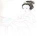

支撑5亿用户、1.5亿活跃用户的Twitter最新架构详解及相关实现
发表于2013-07-12 22:00| 24834次阅读| 来源Highscalability| 53 条评论| 作者Todd Hoff
Twitter如今在世界范围内已拥有1.5亿的活跃用户，为了给用户生成timeline（时间轴）需支撑30万QPS，其firehose每秒同样生成22MB数据。整个系统每天传输tweet 4亿条，并且只需要5分钟就可以让一条tweet从Lady Gaga手中呈现到她3100万粉丝的屏幕上。当下Twitter系统的规模及强大的吞吐量确实惹人艳羡，然而在出道之初Twitter也只是个奋斗在 RoR上的小站点而已，下面就一览Twitter如何完成从RoR到以服务为核心的系统架构蜕变。
Twitter系统的一些特性：
1. 当下的Twitter已不满足于Web App的现状。Twitter期望成为一组API，驱动世界范围内的移动客户端，成为世界级最大的实时事件链之一。
2. Twitter主导的是消费机制，而不是生产机制。每秒读取timeline的操作就会产生30万次的查询，而每秒的写入请求只有6000左右。
3. 离群值，拥有巨量粉丝的个体开始变得普遍，大量粉丝拥有者发送tweet时会因为大量的扩散而变得缓慢。Twitter试图将这个延时控制在5秒内，但是也并非一直生效，特别是名人们发送tweet以及相互转发变得越来越频繁后。这样就导致转发的内容可能比原始内容先一步到达共同粉丝的界面上，这样一来，就高价值用户来说，Twitter的主要精力必须从写操作转移到读操作上。
4. 使用Redis集群处理Home Timeline（首页时间轴，包含了众多关注者的tweet），最大条数为800。
5. 从你关注的人和你点击的链接，Twitter可以获知一系列关于你的信息。
6. 用户最关心的是tweet内容，然而大部分的基础设施却和这些内容不相关。
7. 对如此复杂堆栈进行性能追踪所需求的监视和调试系统往往非常复杂，同样旧决策的影响会不时的出现。
Twitter面临的挑战
1. 1.5亿的用户以及支撑timeline（home及Search）的30万QPS会让最初的具体实现（Naive materialization）变得缓慢。
2. 最初的具体实现由大量选择语句组成，遍及整个Twitter系统，曾今使用后被取缔。
3. 使用一个基于写的扩散方案。在接收到tweet时，系统将做大量的计算以发现tweet需要呈现的用户。这将造就更快、方便的读取，不要对读做任何的计算。由于所有的计算都被安排到写去执行，每秒大约可处理4000个写操作，比读操作要慢一些。
Twitter的团队合作
1. Platform Service团队承担起了Twitter核心基础设施的一切事务：
- 他们负责Timeline Service、Tweet Service、User Service、Social Graph Service这些驱动Twitter平台的所有组件。
- 内外客户端使用了大致相同的API
- 产品团队不需要担心任何规模相关
- 针对第三方API的注册应用过百万
- 做容量规划，打造可扩展后端系统架构，在网站超出预期增长时要不断的更换基础设施。
2. Twitter还拥有一个架构团队。负责Twitter的整体架构，维护技术负债列表。
Pull和Push模式
1. 任何时刻都有用户在Twitter上发布内容，Twitter的任务就是考虑如何将消息同步发出并呈现到粉丝。
2. 真正的挑战就是实时性约束，目标则是在5秒内将消息发送到粉丝：
- 交付意味着尽可能快的收集内容、投入互联网，并且在尽可能短的时间内返回。
- 交付要做的是发布到内存timeline集群、推送通知以及触发电子邮件，其中包括所有的iOS、黑莓、安卓通知以及SMS。
- Twitter是最大的SMS制造者
- Elections可以成为产生内容并且以最快速度扩散内容的最大动力
3. 两种类型的timeline：user timeline（用户时间轴，即指定用户tweet页）及home timeline
- user timeline就是一个指定的用户发布的所有tweet
- Home timeline是你所有关注用户user timeline的一个临时合并
- 业务规则。非你关注人@你时，将会被自动过滤，转发的tweet也可以被过滤。
- 在Twitter的规模做这些事情是非常有挑战性的
Pull模式
1. 指向timeline，比如Twitter.com及hone_line API。之所以将tweet发送给你，是因为你对其进行了请求。基于Pull的交付：你通过REST API的调用向Twitter请求这些数据。
2. 查询timeline，搜索API。对资料库进行查询，尽可能快的返回所有匹配指定查询的tweet。
Push模式
1. Twitter运行了一个巨型的实时事件系统，通过Firehose以每秒22M的速度推送tweet。
- 给Twitter打开一个socket，他们将会在150毫秒内完成所有公共tweet的推送。
- 任何时候给推送集群打开的socket都超过1百万个
- 使用类似搜索引擎的firehose客户端，所有公共的tweet都通过这些socket传输
2. 用户流连接。TweetDeck及Mac版的Twitter同样通过这种方式驱动。在登录的时候，Twitter会查看你的社交图，同样也只会推送关注人的消息，重建home timeline，而不是在持久的连接过程中获得同一个timeline。
3. 查询API，发布一个对tweet的持续查询时，每当有新的tweet发布，并且被认定匹配这个查询，系统会将这条tweet发送给相应的socket。
高等级基于Pull的timeline
- Tweet由一个写入API生成，它将会通过负载均衡器及TFE（Twitter Front End）
- 这种做法很直接，所有的业务逻辑在tweet生成时就已经被执行。
- 随着tweet的扩散过程开始，新生成的tweet会被投入一个大规模的Redis集群中。每个tweet都会在3个不同的机器上做3个拷贝。因为在Twitter的规模，每天会有大把的机器出故障。
- 粉丝的查询基于Flock的社交图服务，Flock会维护粉丝及粉丝列表：
- Flock会返回一个接收者的社交图，并且开始循环访问所有存储在Redis集群上的timeline
- Redis集群拥有TB级以上的内存
- 每次投递4K左右的tweet
- Redis使用原生的表结构
- 如果你有2万个粉丝，负责粉丝查询的守护进程将会确认2万个用户在Redis集群中的具体位置，然后它会横跨整个Redis集群将Tweet ID插入相应的列表中。所以当你有2万个粉丝时，每条tweet的写入都会造成2万个插入操作。
- 储存的信息包括新生成tweet的ID、tweet编写者ID以及一个4字节大小的状态信息（转发、评论或者是其它相关）。
- Home timeline位于Redis集群中，每个有800条tweet。如果你向后翻太多页就没了，RAM是限制列表tweet数量的最大瓶颈。
- 为了控制延时，所有活跃用户都存储在内存中。
- 活跃用户的定义是在30天内有登陆过Twitter，当然这个规则可以根据缓存容量、实际使用等进行修改。
- 如果你不是活跃用户，tweet就不会被放入缓存。
- 只对home timeline进行存盘（持久化。PS：个人觉得这里应该是user timeline，如果是home timeline下文的重建方法显然不科学，欢迎大家讨论）
- 如果home timeline不在Redis集群中，则需要经历一个重建的过程：
- 对社交图服务进行查询，找出你关注的人。分别的访问磁盘获取每个人的数据，然后将他们送回Redis。
- 通过Gizzard使用MySQL处理磁盘存储，这将抽象出所有SQL事务并且提供了全局备份。
- 鉴于每条tweet都会做3个备份，如果其中某台机器发生故障，他们无需对这台机器上的所有timeline进行重建。
- 当tweet被转发时，将会存储一个指向原tweet的指针。
- 当做home timeline查询时，Timeline Service将被调用。Timeline Service确认home timeline究竟存在哪台机器上：
- 鉴于timeline备份在3个不同的机器上，所以需要运行3个不同的哈希环。
- 一旦找着其中一个，就会尽可能快的返回结果。
- 虽然这个过程会花费稍长的一点时间，但是读的处理仍然很快。从冷缓存到浏览器上呈现大约需要2秒，其中一个API的调用时间大约400毫秒。
- 鉴于timeline只包含了tweet的ID，所以还必须要做tweet内容的查询。确定了ID以后，Twitter将通过T-bird并行获取tweet的内容。
- Gizmoduck是个用户服务，而Tweetypie则是个tweet对象服务，每个服务都拥有自己的独立缓存。用户缓存使用的是memcache集群，缓存了所有用户。Tweetypie处理的是上个月的内容，它将一半的tweet储存在它独立的memcache集群中，当然这个部分服务的是内部用户。
- 内容的过滤同样会省却一些读取时间，比如过滤掉法国的纳粹相关，这些内容的读取时间在呈现之前就被过滤了。
高等级的搜索
1. 所有的计算都通过读来解决，这让写更加简洁
2. 当有tweet生成时，Ingester会做相应的语法分析和索引，随后会将其传入Early Bird机器中。Early Bird属于Lucene的修改版本，同时索引都储存在内存中。
3. 在tweet扩散过程中，它可能会被储存在多个home timeline中，其个数由粉丝的数量决定。然而在Early Bird中，一个tweet只会被存入一个Early Bird机器中（不包括备份）。
4. Blender负责timeline的查询，横跨整个数据中心做集散操作。它对每个Early Bird做查询，以发现与查询条件匹配的内容。如果你搜索“New York Times”，Blender会查询数据中心的所有分片并返回结果，同时还会做分类、合并及重新排序等。排序的规则基于互动的数据，也就是转发、收藏及评论的数量等。
5. 互动的信息使用写的模式完成，这里会建立一个互动timeline。如果你收藏或者回复一个tweet，将会触发对互动timeline的修改；类似于home timeline，它同样由一系列的互动ID组成，比如收藏ID、评论ID等等。
6. 所有这些信息都被送到Blender。以读的方式进行重算、合并以及分类，返回的结果就是search timeline为你呈现的界面。
7. Discovery是个基于你相关信息的定制搜索，这些信息主要来自你关注的人、打开的链接，而重新排序的规则同样基于这些信息。
Search和Pull是相反的
1. 搜索和pull看起来非常相似，其实他们有着本质上的区别。
2. 在home timeline情况下：
- 写。一个写tweet的动作会触发一个O（n）规模的Redis集群写入操作，n的值取决于粉丝的数量，由此可见处理Lady Gaga及Barack Obama这样拥有数千万粉丝的名人将会很麻烦。Redis集群上的信息都会写入磁盘，Flock集群会将user timeline储存到磁盘上，但是通常情况下timeline在Redis集群的内存中都可以发现。
- 读。通过API或网络查找Redis是一个常数规模的操作。Twitter对home tiimeline的读操作做了高可用性优化，读操作只花费数十毫秒。这里也可以看出Twitter主导的是一个消费机制，而不是生产机制。每秒可处理30万个读操作，而写操作每秒处理6000个。
3. 搜索timeline情况：
- 写。Tweet生成，并且传输到Ingester，只会写入一个Early Bird机器。一个tweet处理的时间大约为5秒，其中包括了排队及寻找待写入的Early Bird 机器。
- 读。每个读请求都会触发一个O(n)规模的集群读操作。读大约需要100毫秒，搜索不涉及到存盘。所有的Lucene索引都保存在RAM中，所以聚散是非常有效率的，因为不涉及到磁盘。
4. Tweet的内容基本上与大多数的基础设施都是无关的。T-bird存储了所有tweet内容，大部分的tweet内容都是在内存中。如果没有的话，可以通过select查询将其拉回内存。与tweet内容相关的功能非常少，搜索就是其中一个，而Home timeline则完全不关心。
未来的工作
1. 如何将这条数据的管道打造的更快更有效
2. 在5秒内做到tweet的扩散，但是并不是时刻的奏效，特别是越来越多的高粉单位。
3. Twitter是非对称的关注，只有你关注人的tweet才会呈现给你。Twitter可以从这些单向关注中获取你更多的信息，有些单向关注同样还影射出一些社会契约。
4. 问题一般发生在大基数的图上：@ladygaga拥有3100万粉丝，@katyperry拥有2800万粉丝，@justinbieber拥有2800万粉丝，@barackobama拥有2300万粉丝。
5. 大批量粉丝的拥有者每发送一条tweet将造成数据中心大量的写入操作，而随着越来越多名人之间的交互，挑战变得更加的艰巨。
6. 这些需要扩散给大批量用户的tweet是Twitter最大的挑战，在关注这些名人的共同粉丝中，经常会出现回复tweet比原文更早一步送达的情况。他们在站点中引入竞态条件，比如最近关注Lady Gaga的粉丝可能会比老早之前关注的粉丝早5分钟看到tweet内容。比如说一个用户先收到了tweet，并进行回复，然而这时候Lady Gaga的原微博并没有扩散完毕，这样就会存在有些用户先看到回复的情况，为用户造成很大的困扰。Tweet通过ID进行排序，因为他们大多数是单调递增的，然而在如此粉丝规模下，这种做法并不奏效。
7. 寻找读和写途径的合并，不再做如此大规模的扩散；比如传播Taylor Swift新生成的tweet，取代在生成时进行扩散tweet ID，而是在读取时候就进行合并。通过平衡读写途径，节省百分之几十的资源。
解耦相关
1. 基于Twitter通过各种途径传播tweet，解耦可以让不同技术团队独立完成自己的工作。
2. 基于性能问题，系统也需要解耦。Twitter过去使用的一直是完全同步模式，而在两年前因为性能问题他们停用了这个模式。设备接收一个tweet需要145毫秒，接收完毕后就断开所有客户端连接，这么做同样也因为技术负债。写的路径由Ruby驱动，通过MRI实现，一个单线程服务器，每次Unicorn worker分配都会耗尽所有处理性能。每当有tweet流入，Ruby就会接收它，将它放到一个队列中然后断开链接。他们在每台服务器上只运行45-48个进程，这样的话每个机箱能同时处理的tweet数量也是这么多，所以他们必须尽可能快的断开连接。
3. 当下的tweet已经通过异步模式来处理，而这些讨论也都是建立在异步之上。
监视相关
1. 系统性能实时仪表盘
2. 使用VIZ系统监视每个集群，请求Timeline Service并从Scala集群获取数据的平均时间为5毫秒。
3. 基于Google Dapper系统的Zipkin，工程师可以通过Zipkin对请求的细节进行监视，比如获取请求所访问的服务及请求时间，这样就可以获知每个请求的性能细节。这样就可以通过每个阶段耗费的时间对系统进行调试，同样也可以从总体上看从请求到交付耗费的时间。花费了两年的时间，Twitter将活跃用户的timeline降到2毫秒。
部分统计数据：
- 如果你有100万个粉丝，每个tweet将耗费数秒的时间来传播
- Tweet输入统计：每天4亿条；日平均统计5000每秒；日统计峰值7000每秒；大事件期间高于1.2万每秒。
- Timeline交付统计：每天300亿次（更多数据见原文）
原文链接： The Architecture Twitter Uses to Deal with 150M Active Users, 300K QPS, a 22 MB/S Firehose, and Send Tweets in Under 5 Seconds （编译/仲浩 审校/周小璐）
欢迎关注 @CSDN云计算微博，了解更多云信息。
本文为CSDN编译整理，未经允许不得转载，如需转载请联系market#csdn.net(#换成@)
- 顶
- 57
- 踩
- 1
- 相关文章
- 最新报道
已有53条评论
- 最新评论
- 最热评论
- 
- snowhite8888 2013-08-09 08:55在天朝使用twitter是不允许的.

- mingzengkl 2013-08-01 10:16内容很好，翻译很烂。

- 9112252008 2013-07-20 12:22挺不错的呀

- wanderhalo 2013-07-18 16:20文章写的不错


- tomzhaokunshan 2013-07-16 16:28翻译的不是IT 背景啊


- 海天飞翼 2013-07-15 16:35虽然翻译的效果不是很好，但是细心阅读还是可以理解的，当然最好是看原版。 对于译者提到的user timeline和home timeline问题，我认为重建方法就应该是建立在home timeline 上的，并且是针对那些非活跃用户上线时，对其所关注的user timeline集合的home timeline的重建1票，来自zhebanzhongzhong 回复


- wangshumou 2013-07-14 21:06mark


- chufengpiaoran 2013-07-14 12:25讲得很好

- u011397941 2013-07-14 00:03没看懂啊


- Kemi_Deepin 2013-07-13 22:19Twitter是最大的SMS制造者。这个厉害了


- tide0x0 2013-07-13 15:56好像很强大啊，能看到详细的系统架构就好了1票，来自chengcm2011 回复

- PtMS 2013-07-13 15:09很深奥的样子1票，来自chengcm2011 回复


- u010940455 2013-07-13 13:09这个架构能在“电子商务”领域实现吗？


- IT狂人-Kenny 2013-07-13 09:35不明觉厉

- 无为和尚 2013-07-13 08:15垃圾文章，连张图都没有还谈架构1票，来自paul_cheung 回复


- ·自觉遵守：爱国、守法、自律、真实、文明的原则
- ·尊重网上道德，遵守《全国人大常委会关于维护互联网安全的决定》及中华人民共和国其他各项有关法律法规
- ·严禁发表危害国家安全，破坏民族团结、国家宗教政策和社会稳定，含侮辱、诽谤、教唆、淫秽等内容的作品
- ·承担一切因您的行为而直接或间接导致的民事或刑事法律责任
- ·您在CSDN新闻评论发表的作品，CSDN有权在网站内保留、转载、引用或者删除
- ·参与本评论即表明您已经阅读并接受上述条款